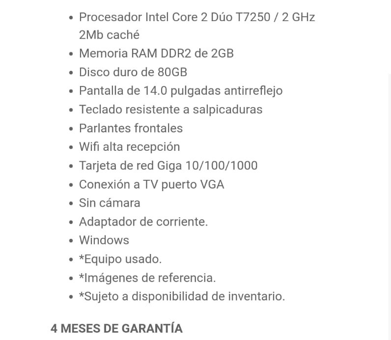

                                                                                                                                                                <html>  <body bgcolor="PEACHPUFF">  
																																							<title>MICONTENIDO2</title>
<font color="blue"><div style="margin-left:30px;margin-top:50px">
Los fremes o marcos crean la <br>
Estructura de la p&aacutegina web
<br>
<br>


 


</body>

</html>                                                                                                                                                                                                                                                                                                                                                                                                                                                                                                                                                                                                                                                                                                                                                                                                                                    